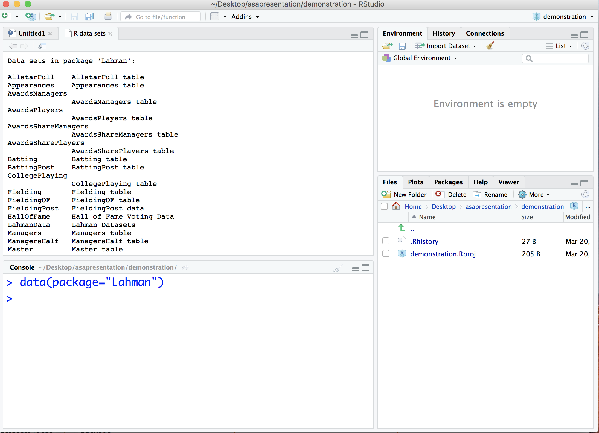

Chapter 4 A Look At The Tables
To see all of the tables available in the Lahman database, type the following in the console, and a list of them will appear above in the source panel:

For this session, we will use the Batting table and the Master table, but there are many more that you can explore.
Let’s take a look at the Batting table. To see the first few records in the table, you can simply type Batting in the console and press enter. But if you want to control how many records you see, it is best to use the head function:
head(Batting,10)## playerID yearID stint teamID lgID G AB R H X2B X3B HR RBI SB CS BB
## 1 abercda01 1871 1 TRO NA 1 4 0 0 0 0 0 0 0 0 0
## 2 addybo01 1871 1 RC1 NA 25 118 30 32 6 0 0 13 8 1 4
## 3 allisar01 1871 1 CL1 NA 29 137 28 40 4 5 0 19 3 1 2
## 4 allisdo01 1871 1 WS3 NA 27 133 28 44 10 2 2 27 1 1 0
## 5 ansonca01 1871 1 RC1 NA 25 120 29 39 11 3 0 16 6 2 2
## 6 armstbo01 1871 1 FW1 NA 12 49 9 11 2 1 0 5 0 1 0
## 7 barkeal01 1871 1 RC1 NA 1 4 0 1 0 0 0 2 0 0 1
## 8 barnero01 1871 1 BS1 NA 31 157 66 63 10 9 0 34 11 6 13
## 9 barrebi01 1871 1 FW1 NA 1 5 1 1 1 0 0 1 0 0 0
## 10 barrofr01 1871 1 BS1 NA 18 86 13 13 2 1 0 11 1 0 0
## SO IBB HBP SH SF GIDP
## 1 0 NA NA NA NA NA
## 2 0 NA NA NA NA NA
## 3 5 NA NA NA NA NA
## 4 2 NA NA NA NA NA
## 5 1 NA NA NA NA NA
## 6 1 NA NA NA NA NA
## 7 0 NA NA NA NA NA
## 8 1 NA NA NA NA NA
## 9 0 NA NA NA NA NA
## 10 0 NA NA NA NA NAHere we are looking at the first 10 records of the Batting table. Each player has at least one record for each year he played. If he played for more than one team in a year, he has multiple records for that year, one for each team. By reading the column names, you can see what statistics are available. And you can see that the data goes back to 1871.
For the most part, we will be interested in the playerID, yearID, teamID, and HR columns.
Before moving on, let’s take a look at the Master table.
head(Master,10)## playerID birthYear birthMonth birthDay birthCountry birthState
## 1 aardsda01 1981 12 27 USA CO
## 2 aaronha01 1934 2 5 USA AL
## 3 aaronto01 1939 8 5 USA AL
## 4 aasedo01 1954 9 8 USA CA
## 5 abadan01 1972 8 25 USA FL
## 6 abadfe01 1985 12 17 D.R. La Romana
## 7 abadijo01 1850 11 4 USA PA
## 8 abbated01 1877 4 15 USA PA
## 9 abbeybe01 1869 11 11 USA VT
## 10 abbeych01 1866 10 14 USA NE
## birthCity deathYear deathMonth deathDay deathCountry deathState
## 1 Denver NA NA NA <NA> <NA>
## 2 Mobile NA NA NA <NA> <NA>
## 3 Mobile 1984 8 16 USA GA
## 4 Orange NA NA NA <NA> <NA>
## 5 Palm Beach NA NA NA <NA> <NA>
## 6 La Romana NA NA NA <NA> <NA>
## 7 Philadelphia 1905 5 17 USA NJ
## 8 Latrobe 1957 1 6 USA FL
## 9 Essex 1962 6 11 USA VT
## 10 Falls City 1926 4 27 USA CA
## deathCity nameFirst nameLast nameGiven weight height
## 1 <NA> David Aardsma David Allan 215 75
## 2 <NA> Hank Aaron Henry Louis 180 72
## 3 Atlanta Tommie Aaron Tommie Lee 190 75
## 4 <NA> Don Aase Donald William 190 75
## 5 <NA> Andy Abad Fausto Andres 184 73
## 6 <NA> Fernando Abad Fernando Antonio 220 73
## 7 Pemberton John Abadie John W. 192 72
## 8 Fort Lauderdale Ed Abbaticchio Edward James 170 71
## 9 Colchester Bert Abbey Bert Wood 175 71
## 10 San Francisco Charlie Abbey Charles S. 169 68
## bats throws debut finalGame retroID bbrefID deathDate
## 1 R R 2004-04-06 2015-08-23 aardd001 aardsda01 <NA>
## 2 R R 1954-04-13 1976-10-03 aaroh101 aaronha01 <NA>
## 3 R R 1962-04-10 1971-09-26 aarot101 aaronto01 1984-08-16
## 4 R R 1977-07-26 1990-10-03 aased001 aasedo01 <NA>
## 5 L L 2001-09-10 2006-04-13 abada001 abadan01 <NA>
## 6 L L 2010-07-28 2016-09-25 abadf001 abadfe01 <NA>
## 7 R R 1875-04-26 1875-06-10 abadj101 abadijo01 1905-05-17
## 8 R R 1897-09-04 1910-09-15 abbae101 abbated01 1957-01-06
## 9 R R 1892-06-14 1896-09-23 abbeb101 abbeybe01 1962-06-11
## 10 L L 1893-08-16 1897-08-19 abbec101 abbeych01 1926-04-27
## birthDate
## 1 1981-12-27
## 2 1934-02-05
## 3 1939-08-05
## 4 1954-09-08
## 5 1972-08-25
## 6 1985-12-17
## 7 1850-11-04
## 8 1877-04-15
## 9 1869-11-11
## 10 1866-10-14Every player in baseball history, going back to 1871, has exactly one record in the Master table. It is here where you can find biographical information about the players, such as a player’s birthday, height, weight, etc. We will be interested, primarily, in the playerID, nameFirst, and nameLast columns.
If there is time, we may also take a look at the Teams table.